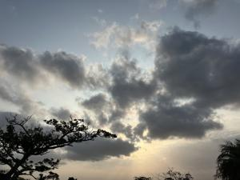
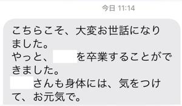

うるがいの話 ある日
最新: ２０２４年問題【うるがいの話 ある日】とは 一日だけのプログです
『うるがいの話』の最新一日だけのプログで、通信料が少なく経済的だ。カニの画像をクリックすると全ての日付が載る『うるがいの話』サイトを表示します
|
|
【うるがいの話】 うるがい(ｳﾙｶﾞｲ urugai)とは、『もずくがに』の名前でとても大きくなります。 |
|---|---|
|
|
【カミマヤーの話】 猫のことを方言でマヤーといいます。カミマヤー（kamimayaa）とは、神の猫のことです。 |
|
【たながぁの音楽】 たながぁ（ﾀﾅｶﾞｰ tanagaa）とは手長えびのことで、何種類かあり大きいのは車 エビぐらいになります。 |

|
【ぶながぁの話】 ぶながぁ(ﾌﾞﾅｶﾞｰ bunagaa)とは、赤い髪の毛、赤い身体、そして身長は１ｍ２０ｃｍ ぐらい、川の蟹を食べているの目撃された。場所は沖縄県国頭郡大宜味村のと ある村僕の隣近所に住んでいる爺さんから、聞いた話です。 |
|
|
【ギーマの話】 ギーマ(giima)とは、山原の里山に咲くスズランに似た、 花を付けます。実は食べられます、 気が付くと口の周りが紫になっています。 |
2024年03月19日 (火）２０２４年問題
20:40
 
元の会社のヤマ君が、本日をもって退職した。『長いあいだご苦労様でした
』とＳＭＳを送る。ヤマ君には、とんでもなく哀れしたプロジェクトで苦労
した仲間４人である。元の会社にはあと一人、残っている。寂しいだろうな
一人一人いなくなっていくのは。返ってきた返事である。
中学生だった私に、夏休みのよるギターを教えれくれた親戚のテルも６月に
退任すると新聞で知った。続々と現役を退いていく（仕事につかない前提だ
が）。
同じ世代で集まっていた前の職場で、この世代の人達が退職したらエライこ
とに（２０２４年問題）が起こりますゼ、何とかしなければと外部（コンサ
ル）から、知恵を借りたいと予算確保で四苦八苦する。残念ながら当時の財
務省の役人から、認められずボツになる。日本全体がこの状態である、とい
うことでもないが、暇人は仕事に復帰している。
２０時３２分 ビットコインの総資産 ￥２７、２５３（↓２、０９８！）